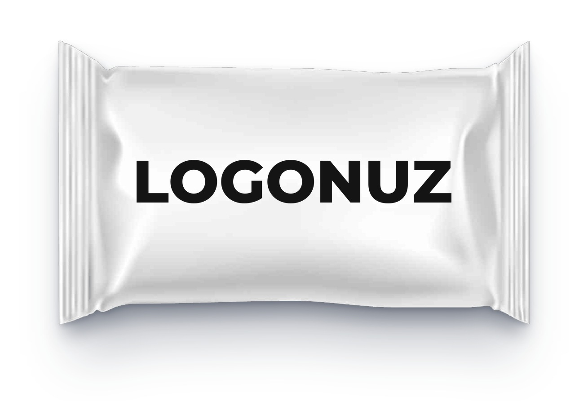

Restoran · Kebapçı · Balıkçı · Fast food
Yemek biter, logonuz masada kalır.
Dürüm, kebap ya da balık sonrası masaya bırakılan ıslak mendil ve havlu, müşterinin işletmenizle en son temas ettiği an. Üzerinde sizin logonuz olsun; cebine girsin, evine gitsin.



Masada ve paket serviste
Her masaya, her paketin içine logolu mendil: düzenli tüketim, sürekli görünürlük.
Kağıt peçete değil
Kumaş gibi yumuşak; yırtılmaz, dağılmaz, tüy bırakmaz, sıkınca su damlamaz.
Kışın sıcak, yazın serin
Ocakbaşında sıcak havlu ikramı; yaz terasında buzdolabından serin havlu.

Sıcak servis
Isıtıcı dolapta ambalajıyla 80°C’de hazır bekler (dolap ayrıca satılır).

Serin servis
+4°C buzdolabında bekletilip serin sunulur.
Logonuzu gönderin, işletmenize özel görseli ücretsiz hazırlayalım.
Kumaşı elinizde görün: ücretsiz numune, kargo bizden.
0 (542) 569 98 69
info@hijyenlab.com
hijyenlab.com
info@hijyenlab.com
hijyenlab.com
İKA Kurumsal Tedarik Hizmetleri Ltd. Şti.Görsellerdeki “LOGONUZ” yerine sizin logonuz basılır. Fiyat için size özel teklif hazırlanır.